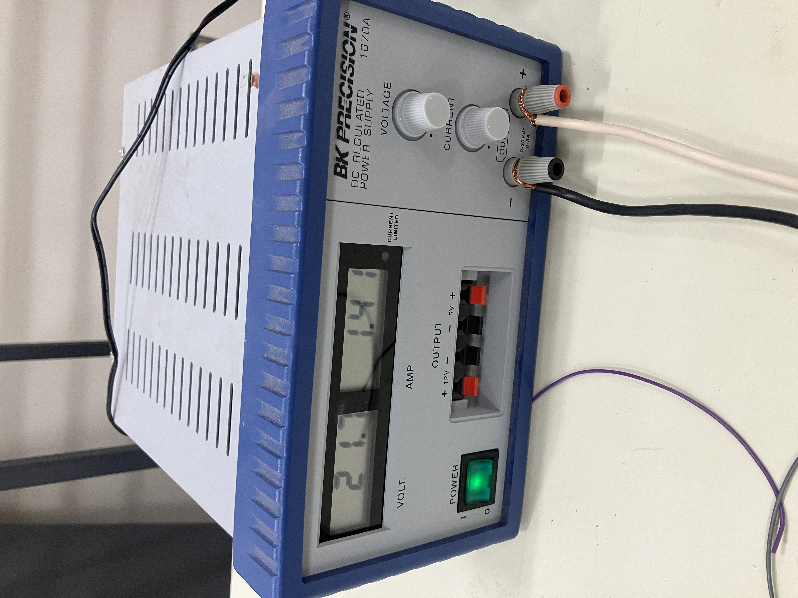

Lab 7A. - Bilge Pump Curve#
Course Website
This laboratory determines performance characteristics of a small bilge pump in various flow configurations.
Readings#
General Readings about Pumps
Objective#
To empirically determine the relationship between discharge (Q), head (H), and power input (P) for a small DC pump operating at variable discharge elevations. Students will produce a pump curve (H vs Q) and evaluate power consumption.
Background Theory#
A pump curve is a graph showing how the head (H) produced by a pump varies with flow rate (Q).
Key Concepts:
Total Dynamic Head (TDH) is approximated here by the vertical height from pump to discharge.
Flow Rate (Q) is measured in L/min from the flow meter.
Power Input (P) is computed using: $\( P = V \times I \)$ where V is voltage and I is current.
(Optional) Efficiency can be estimated by:
\[ \eta = \frac{\rho g Q H}{P} \]where \( \rho \) is water density and \( g \) is gravity.
Apparatus#
The experimental set-up is comprised of:
12V DC pump
Variable power supply
Flow meter
Flexible discharge pipe
Ruler or measuring tape
Water container
Stopwatch (optional)
An image of the system in operation is shown below

The current-limited power supply is visible on the left as is the flowmeter data collector; flow can also be determined by bucket-and-stopwatch. The discharge outlet can be moved to different locations above the supply tank to produce a pump curve. There is considerable splash and overflow, so a hose (not pictured) is used to keep the orange tank always full, ensuring a constant head at the supply location.
Experimental Setup#
Connect pump to water reservoir.
Attach flexible pipe and flow meter inline.
Elevate discharge outlet to different known heights.
Measure V, I, Q, and elevation H.
The figure below is a close-up of the power supply. In the figure the voltage is read from the left display, and current from the right display. The current can be limited by the experimenter - in current limited conditions a small red indicator appears in the display.

Discharge is measured using the flowmeter as in prior laboratories; also you can use a bucket and stopwatch approach.
Procedure#
Fix power supply voltage (e.g., 12V).
Begin with lowest discharge height.
Record:
Voltage (V)
Current (I)
Flow Rate (Q)
Height (H)
Repeat for multiple heights.
(Optional) Repeat at different voltage.
import pandas as pd
# Data table template
data = pd.DataFrame({
'Trial': [1, 2, 3, 4, 5],
'Voltage (V)': [None]*5,
'Current (A)': [None]*5,
'Flow Rate Q (L/min)': [None]*5,
'Head H (m)': [None]*5,
'Power Input P (W)': [None]*5
})
data
| Trial | Voltage (V) | Current (A) | Flow Rate Q (L/min) | Head H (m) | Power Input P (W) | |
|---|---|---|---|---|---|---|
| 0 | 1 | None | None | None | None | None |
| 1 | 2 | None | None | None | None | None |
| 2 | 3 | None | None | None | None | None |
| 3 | 4 | None | None | None | None | None |
| 4 | 5 | None | None | None | None | None |
import numpy as np
import matplotlib.pyplot as plt
from numpy.polynomial.polynomial import Polynomial
# Sample data entry (replace with your measurements)
Q = np.array([4, 3.5, 3, 2.5, 2]) # L/min
H = np.array([0.2, 0.4, 0.6, 0.8, 1.0]) # meters
# Fit a 2nd-degree polynomial
coefs = Polynomial.fit(Q, H, 2).convert().coef
#print(f"Fitted Pump Curve Equation: H(Q) = {coefs[0]:.3f} + {coefs[1]:.3f}Q + {coefs[2]:.3f}Q^2")
addtitle = f"Fitted Pump Curve Equation: H(Q) = {coefs[0]:.3f} + {coefs[1]:.3f}Q + {coefs[2]:.3f}Q^2"
# Plot
Q_fit = np.linspace(min(Q), max(Q), 100)
H_fit = coefs[0] + coefs[1]*Q_fit + coefs[2]*Q_fit**2
plt.figure()
plt.plot(Q, H, 'o', label='Measured')
plt.plot(Q_fit, H_fit, '-', label='Fitted Curve')
plt.xlabel('Flow Rate Q (L/min)')
plt.ylabel('Head H (m)')
plt.title('Pump Curve: Head vs Flow Rate\n' + addtitle)
plt.legend()
plt.grid(True)
plt.show()
Discussion Questions#
How does head change as flow rate increases?
How does power consumption relate to flow rate?
Would this pump be suitable for a head requirement of 1.2 m?
What measurement errors may affect your results?
Deliverables#
Completed data table
Graphs (H vs Q and optionally P vs Q)
Fitted pump curve equation
Answers to discussion questions